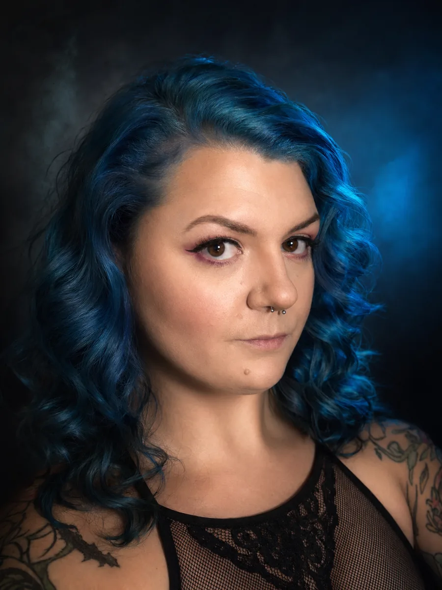

About Satanica
I’m Satanica Lux. I built The Vice City Sinner because I got tired of waiting for somebody else to make the publication I actually wanted to read.
I’m Satanica Lux, creator and editor of The Vice City Sinner. I’m a heavy metal girl with a long memory for people, rooms, and the gap between what somebody says and what they do. I’ve always been more interested in what lives outside the center of the room — the detail everyone else already dismissed, the story that doesn’t fit the neat version, the question that starts polite and ends three hours later in an archive.
Vice City Sinner is South Florida culture with the volume turned up and the bullshit turned down: music, style, nightlife, identity, history, art, relationships, human behavior, and whatever else refuses to leave my brain alone. Sexuality and kink show up when they’re part of the truth of a story. They are not the pitch. This is not a scene club, a cool-kid table, or a manifesto. It’s an independent publication for people who don’t need to audition for a seat.
I started it on purpose. I want writing that is curious without being precious, sharp without being cruel, and honest enough to sit with contradiction. I’m not here to tell you what you’re supposed to like or think. I want to tell good stories, find the interesting part everyone else walked past, and occasionally ruin a perfectly good afternoon because now you need to know the answer too.
South Florida is home base. The conversation is bigger than one city and bigger than one scene. All sinners welcome — including the ones who never thought a place like this was for them.
Belonging without audition. Curiosity over condemnation. Keep listening.
Start with what’s up now
- Editorial Out of the Foxhole and Into Real Life
- Style I’m Bringing Back Hair Metal Fashion. Sorry Not Sorry.
- Culture Wait, What’s Your Real Name?
- History Who the Fuck Invented the Dungeon?
Or go home and get new posts when they land.
Get New Posts